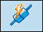

Connect to Solid Edge Wiring and Harness Design for data exchange
Connecting to Solid Edge Wiring and Harness Design for data exchange consists of:configuring
-
Configuring the connection properties for Solid Edge and Solid Edge Wiring and Harness Design.
-
Creating a connection between Solid Edge and Solid Edge Wiring and Harness Design.
-
Configure Solid Edge Wiring and Harness Design connection properties.
-
In Harness Design, click the Home→Electrical→Connect
 button.
button. -
In Solid Edge Wiring and Harness Design, click the Home→Solid Edge Connect
 button.
button.
Note:
After you connect to Solid Edge Wiring and Harness Design, a different Connect icon

indicates you are connected. To disconnect from Solid Edge Wiring and Harness Design, click the new icon.How do I
Configure Solid Edge connection propertiesUpdate the harness design to match Solid Edge Wiring and Harness Design
Cross select objects between Solid Edge and Solid Edge Wiring and Harness Design
Reject harness design updates
Learn more
Working with Solid Edge Wiring and Harness DesignLook up more details
Configure commandConnection Properties dialog box
Connect command
Update Harness command
Assign Occurrence/Component dialog box
Cross Select command
Reject command